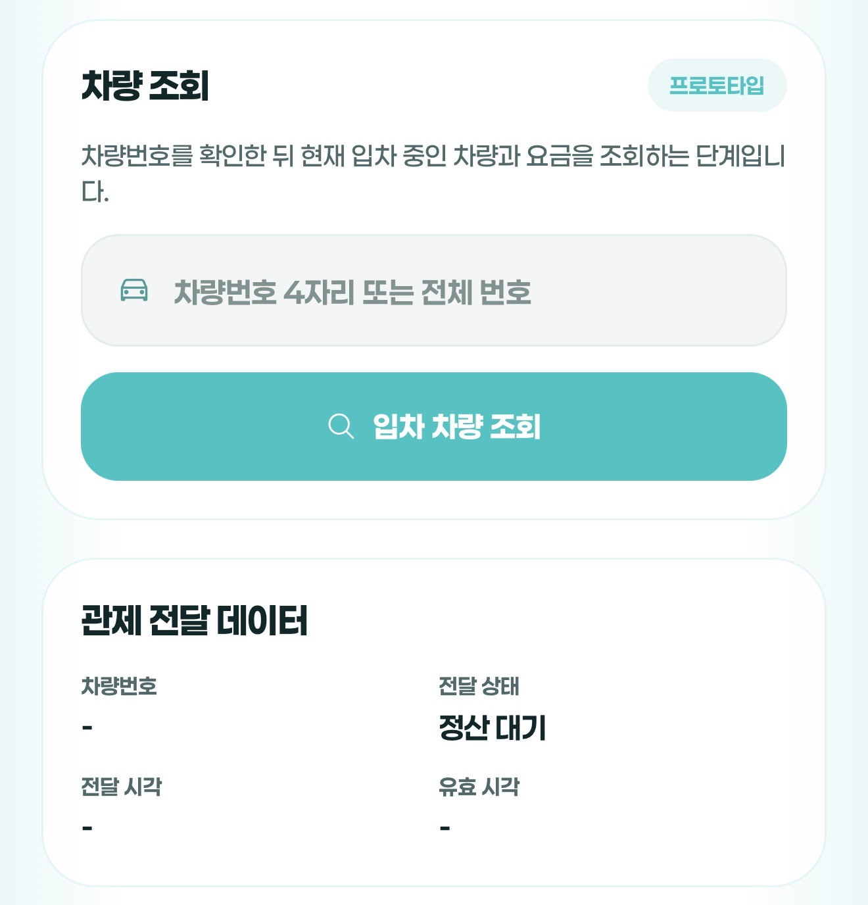
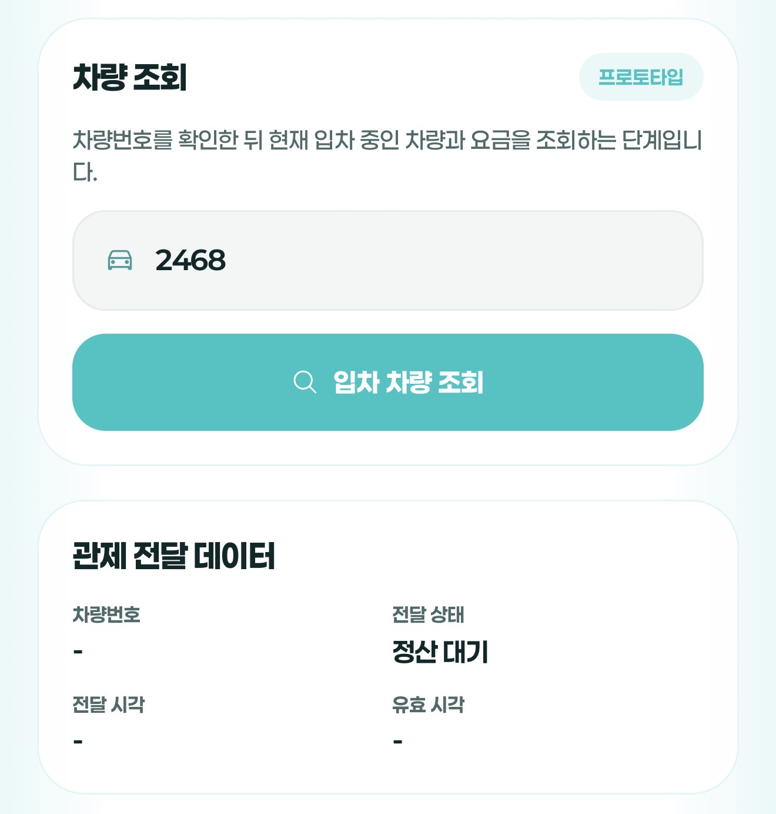
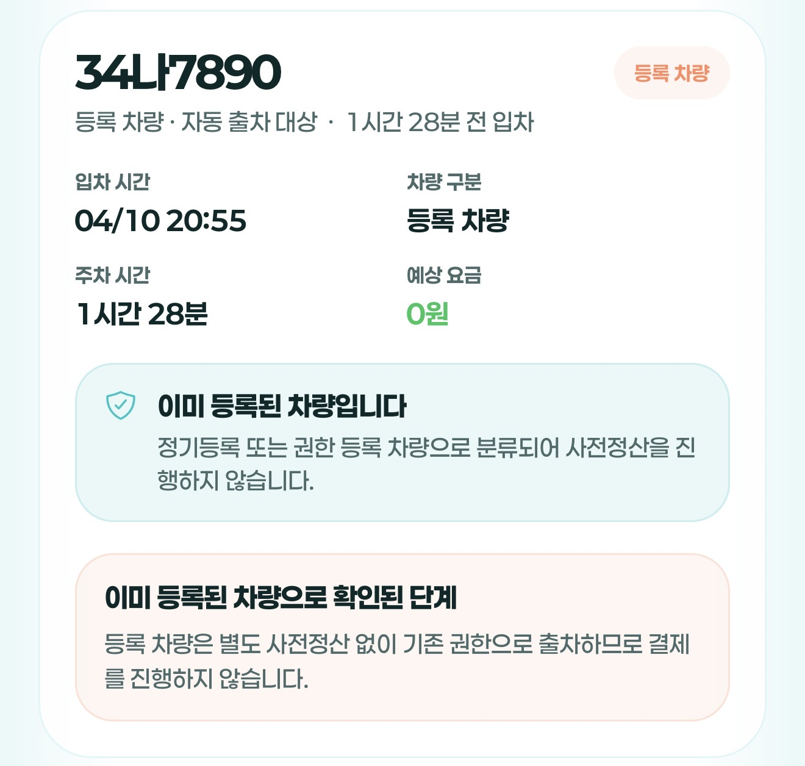
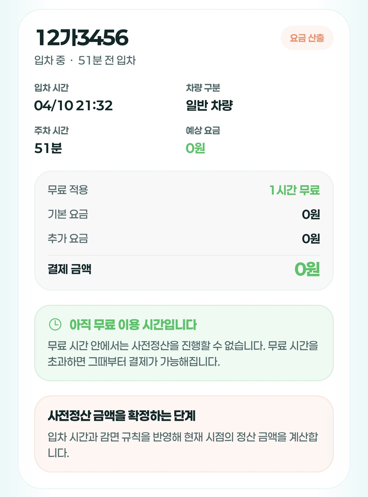
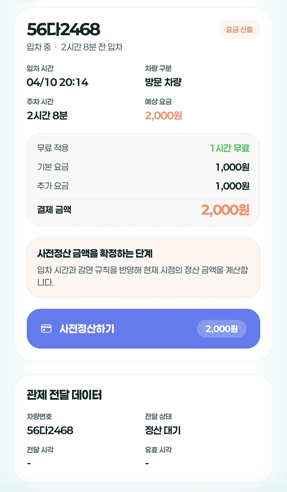
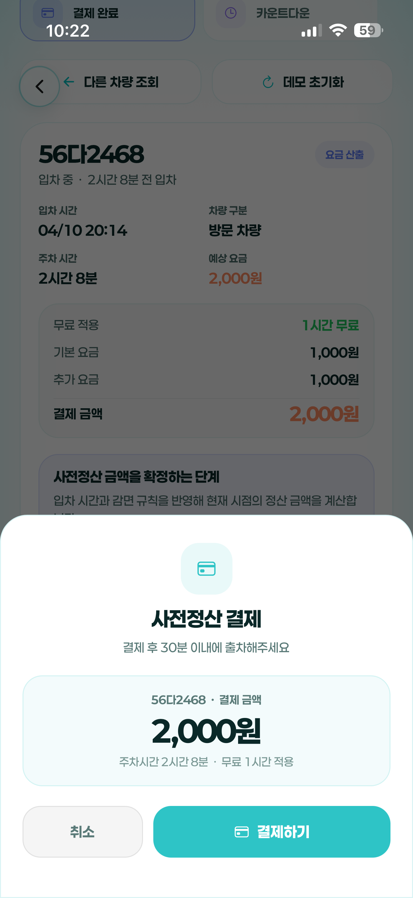
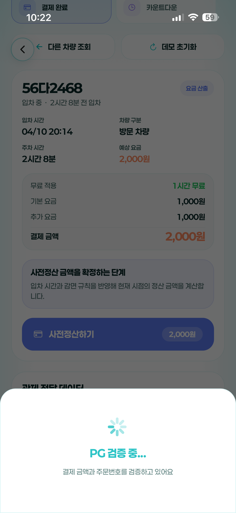
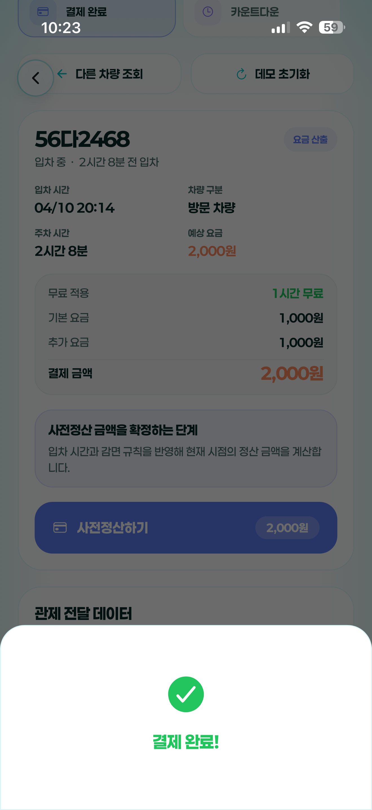
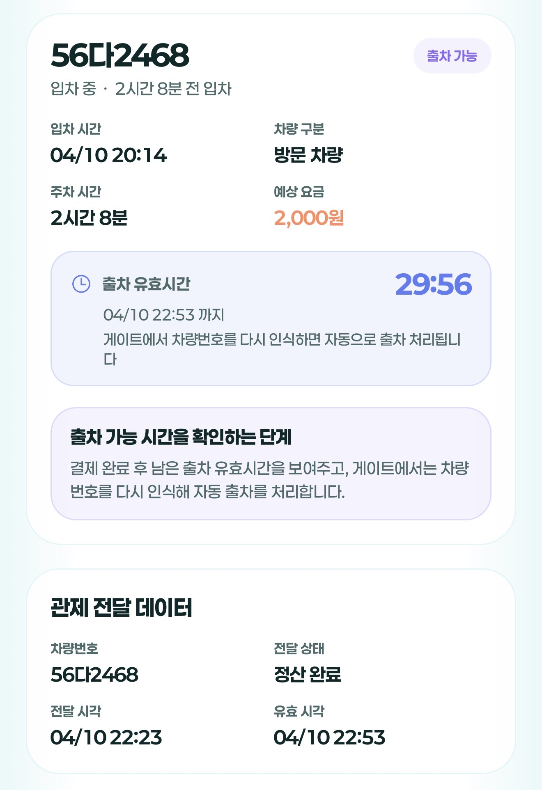

교내 주차 사전정산 시스템
(앱 연동) 구축 제안
학생 개발팀 프로토타입 시연 및 관제 시스템 연동 요구사항
01. 제안 배경 및 현재 진행 상황
📱 주차 사전정산 프로토타입 구현 완료
-
✔
현재 상황: 학생 개발팀에서 주차 사전정산 기능의 앱 프로토타입 구현을 완료했습니다.
-
✔
구현된 기능: 차량 조회, 주차시간/요금 계산, 모의 결제, 출차 유효시간 카운트다운 등 사용자 핵심 흐름 검증 완료.
-
✔
도입 효과:
- 출차 게이트 정체 해소 및 빠른 출차 지원
- 무인 정산기 앞 대기 시간 감소
- 교내 방문객 및 학생들의 이용 편의성 극대화

02. 전체 시스템 구성 요소
본 시스템은 기존 주차 시스템을 교체하는 것이 아니라, 앱과 기존 시스템을 연결하는 구조입니다.
1. 차단기/LPR (기존)
정·후문 번호판 인식 및 차단기 개폐 제어
2. 주차관제 시스템 (기존)
입/출차 원본 기록 및 등록 차량 데이터 보유
3. 연동 서버 (신규 구축)
관제 시스템과 앱 사이의 브릿지 역할
(현재 프로토타입에서는 Supabase로 데모 구현)
4. 사용자 앱 (신규 구축)
차량 조회, 결제 진행, 출차 가능 상태 확인
5. PG사 (외부)
토스페이먼츠, 포트원 등 안전한 결제 승인 검증
03. 직관적인 사전정산 프로세스 (UI/UX)
프로토타입으로 구현된 사용자 핵심 흐름입니다.
Step 1. 차량 조회
차량번호 4자리 또는 전체 번호를 검색하여 현재 입차 중인 차량을 찾습니다.

Step 2. 대상 확인 및 요금 계산
등록 차량 여부를 확인하고, 일반 차량의 경우 무료시간과 요금을 계산합니다.



Step 3. 정산 결제
예상 요금 확인 후 PG 연동을 통한 안전한 결제를 진행합니다.


Step 4. 출차 대기
결제 완료 후 정해진 유효시간(예: 30분) 내에 출차하도록 카운트다운을 제공합니다.


04. 시스템 작동 흐름 및 운영 정책
핵심 상태값 관리 (State)
-
unpaid
미정산
입차는 했으나 아직 정산하지 않은 상태
-
paid
결제 완료
서버와 PG사 간 결제(주문번호, 금액) 2중 검증 완료
-
exited
출차 완료
출차 허용 전달 완료 및 게이트 통과
-
expired
시간 초과
사전 정산 후 유효시간 내 미출차 상태
운영 요금 정책 (학교 공식 기준)
- 평일 무료시간 1시간
- 주말/공휴일 무료시간 5시간
- 기본 요금 (초과 시) 1,000원
- 추가 요금 (30분당) 500원
- 일일 상한 6,000원
※ 요금 계산 및 상태는 당일 기준으로 처리되며, 자정(24:00) 기준 자동 초기화
05. 핵심 기술: 관제 시스템 연동 방식
실제 출차 시 차단기가 열리기 위한 가장 이상적인 연동 방식은 실시간 조회 방식입니다.
1. 게이트 도착
차량이 정문/후문 게이트에 도착하여 LPR(번호판 인식) 작동
2. 출차 권한 조회
관제 시스템이 우리 연동 서버로 API 호출
"이 차량(12가3456) 출차 가능합니까?"
3. 상태 검증 및 응답
연동 서버가 DB 확인 (paid 상태 여부 및 유효시간 확인) 후 "허용" 응답
4. 차단기 개방
차단기 개방 및 해당 사전 정산권 즉시 소멸(exited) 처리
💡 이 방식의 장점: 만료 처리, 중복 결제 방지, 추가 요금 발생 시 재검증 로직 구현이 가장 깔끔하고 안전합니다.
06. 성공적 도입을 위한 학교(업체) 요청 사항
앱, 서버 연동, 결제 모듈은 학생팀에서 모두 자체 구축 가능합니다. 단, 기존 시스템과의 브릿지를 위해 주차관제 업체의 API 협조가 반드시 필요합니다.
입차 조회 API (제공받아야 함)
차량번호를 기반으로 입차 시각, 입차 게이트, 등록차량 여부를 조회할 수 있는 엔드포인트
출차 허용 확인 API
게이트에서 출차 시 연동 서버로 출차 가능 여부를 실시간 쿼리할 수 있는 권한 (우리가 제공하거나 업체가 콜백)
등록 차량 데이터 연동
정기권 및 교직원/학생 등록 차량 목록 DB 동기화 방식 협의
📊 프로젝트 실현 가능성 및 리스크
| 구성 요소 | 난이도 | 비고 |
|---|---|---|
| 앱 / 서버 로직 / 결제 | 낮음 | 프로토타입 완료. 실서버 교체 및 PG 연동만 진행. |
| 관제 API 연동 | 중간~높음 | 업체의 API 개방 의지 및 협조 속도에 좌우됨. |
| 보안 및 네트워크 리스크 | 중간 | 내부망 존재 시 외부 통신용 브릿지 서버나 VPN 방화벽 설정(IT부서 협조) 필요. |
💡 주차관제 시스템 연동 가능 여부 확인 요청
학생 개발팀에서 프로토타입을 통해 서비스 구현 가능성은 이미 입증했습니다.
실제 서비스로 도입하기 위해서는 기존 주차관제 시스템에서 필요한 데이터를 제공해 줄 수 있는지가 가장 중요합니다.
주차관제 업체 측에 문의가 필요한 3가지
-
1.
차량 정보 조회 API 제공 여부
앱에서 요금 계산을 위해 특정 차량의 '입차시간'과 '등록차량 여부'를 조회할 수 있는 기능이 필요합니다. -
2.
결제 완료 차량의 출차 제어 연동 여부
결제된 차량이 차단기에 도착했을 때, 관제 시스템이 저희 서버로 "이 차 나가도 되나요?"라고 물어봐 줄 수 있는지 확인이 필요합니다. -
3.
테스트 환경 및 기술 문서 지원 여부
실제 적용 전 안전하게 연동을 테스트해 볼 수 있는 환경이나 API 가이드 문서 제공이 가능한지 궁금합니다.
위 기술적 요구사항들이 현재 사용 중인 시스템에서 지원 가능한지,
담당 부서를 통해 관제 업체 측에 가볍게 확인(질의)해 주시기를 부탁드립니다.